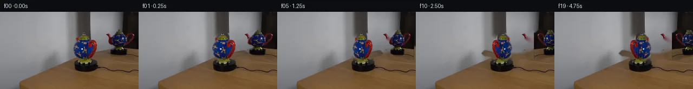

![首帧]()

Round 00
2026-11-05T07:27:00.968726+00:00像素候选变化代码 +299/−0inspection 更新
pixels db848ab36ec61e9c · code 7305a0f1b73cb33b
查看本轮 generate.py 真实 diff
--- previous/generate.py +++ current/generate.py @@ -0,0 +1,299 @@ +#!/usr/bin/env python3 +"""Generate the PixelWorld-Text teapot rotation using local pixel transforms only.""" + +from pathlib import Path +import hashlib +import json + +import cv2 +import numpy as np +from PIL import Image, ImageDraw + + +ROOT = Path(__file__).resolve().parent +SRC = ROOT / "first_frame.png" +FRAME_DIR = ROOT / "frames" +TMP_DIR = ROOT / ".tmp" +W, H = 256, 144 +N_FRAMES = 20 +FPS = 4 + + +def polygon_mask(points, blur=0.8): + mask = np.zeros((H, W), np.uint8) + cv2.fillPoly(mask, [np.asarray(points, np.int32)], 255) + if blur: + mask = cv2.GaussianBlur(mask, (0, 0), blur) + return mask.astype(np.float32) / 255.0 + + +def hard_polygon(points): + mask = np.zeros((H, W), np.uint8) + cv2.fillPoly(mask, [np.asarray(points, np.int32)], 255) + return mask + + +def make_object_mattes(src): + # The outlines were measured from chroma/edge runs in the source frame. + main_outline = [ + (151, 40), (163, 40), (169, 46), (174, 50), (179, 58), + (181, 68), (197, 72), (202, 77), (196, 82), (181, 83), + (176, 88), (168, 91), (148, 91), (140, 87), (136, 81), + (139, 74), (135, 68), (136, 61), (140, 55), (141, 48), + ] + reflection_outline = [ + (217, 34), (246, 34), (251, 38), (255, 39), (255, 89), + (242, 89), (234, 86), (220, 84), (210, 81), (203, 75), + (205, 68), (201, 61), (202, 53), (208, 46), + ] + + # Restrict broad hand-measured silhouettes with image evidence, while + # retaining dark rims adjacent to the saturated enamel colors. + rgb = src.astype(np.int16) + chroma = rgb.max(axis=2) - rgb.min(axis=2) + luma = cv2.cvtColor(src, cv2.COLOR_RGB2GRAY) + + def evidenced(outline, seed_region): + boundary = hard_polygon(outline) + seed = (((chroma > 15) | (luma < 72)) & (boundary > 0)).astype(np.uint8) * 255 + seed = cv2.morphologyEx(seed, cv2.MORPH_CLOSE, np.ones((7, 7), np.uint8)) + seed = cv2.dilate(seed, np.ones((5, 5), np.uint8), iterations=1) + # Preserve the coherent body core even where highlights are neutral. + cv2.fillPoly(seed, [np.asarray(seed_region, np.int32)], 255) + seed = cv2.bitwise_and(seed, boundary) + return cv2.GaussianBlur(seed, (0, 0), 0.85).astype(np.float32) / 255.0 + + main = evidenced(main_outline, [(143, 56), (174, 53), (181, 72), (174, 87), (145, 87), (137, 70)]) + refl = evidenced(reflection_outline, [(211, 49), (250, 40), (255, 84), (224, 83), (204, 70)]) + return main, refl + + +def reconstruct_background(src, main_alpha, refl_alpha): + # Inpaint only the original occupied pixels. Future swept areas already + # contain genuine background/table pixels from the locked source frame. + mask = ((np.maximum(main_alpha, refl_alpha) > 0.04).astype(np.uint8) * 255) + mask = cv2.dilate(mask, np.ones((3, 3), np.uint8), iterations=1) + bgr = cv2.cvtColor(src, cv2.COLOR_RGB2BGR) + filled = cv2.inpaint(bgr, mask, 5, cv2.INPAINT_TELEA) + return cv2.cvtColor(filled, cv2.COLOR_BGR2RGB) + + +def smoothstep(edge0, edge1, value): + t = np.clip((value - edge0) / (edge1 - edge0), 0.0, 1.0) + return t * t * (3.0 - 2.0 * t) + + +def affine_object(src, alpha, axis_x, angle_deg, mirror_phase=False): + """Return premultiplied RGB and alpha after a pseudo-3D axial turn. … diff truncated; 212 more lines …